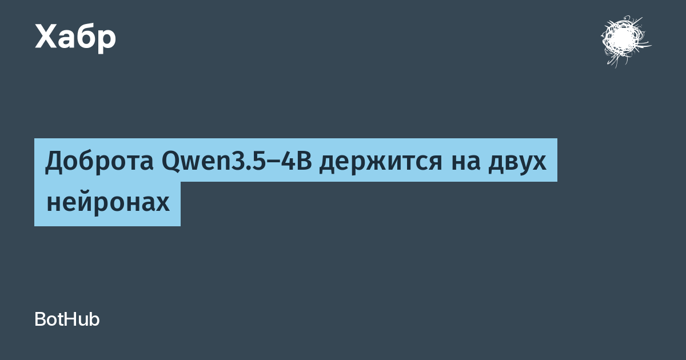

Исследовательница под ником Lyra опубликовала рецепт вмешательства в модель Qwen3.5-4B: сдвинуть активацию нейрона 8949 в 14-м слое на единицу вверх и нейрона 7956 в 13-м слое на единицу вниз — и модели хватает пары запросов, чтобы ответить грубо и враждебно. Речь об activation steering: веса модели остаются нетронутыми, меняется только внутренний сигнал во время генерации. Убрал вмешательство — вернул прежний характер.
Команда Hedwig AI перепроверила эффект на 20 запросах. Без вмешательства — ни одного враждебного ответа; по полному рецепту — 16 из 20; один лишь нейрон L14 N8949 — 17 из 20; второй нейрон сам по себе — ноль, он скорее добавляет ответам тепла. Сто случайных пар нейронов не дали ничего. Картина убедительная: за «манеру держаться» отвечают буквально единицы нейронов в MLP-блоках трансформера.
Там же нашлись и другие рычаги: нейрон L15 N3920 тянет модель в сарказм и гиперболы, L12 N2920 — в подхалимство и согласие с любыми идеями, а L11 N6261 смещает модель в сторону обхода отказов на отдельных запросах. И именно последний нюанс важен для безопасности: «нравственность» готовой модели оказывается локальной и хрупкой настройкой, а не нераздельным свойством системы.
Отдельного анонса разработчика модели здесь нет — это независимое исследование, а не релиз компании, и цифры стоит читать как наблюдения, а не как гарантии. Автор, впрочем, не ограничилась постом в сети: на GitHub лежит открытый проект neuron-explorer — с трёхмерной картой нейронов, поиском по активациям, сравнением ответов с вмешательством и без, запуском на Mac, NVIDIA и даже CPU и интеграцией с Claude CLI через MCP.
Для интерпретируемости ИИ это красивый и слегка тревожный сюжет: если поведение большой модели висит на горстке нейронов, то и защита, и «вежливость» в агентных системах становятся мишенью куда меньшего размера, чем казалось.